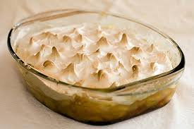

Doce de banana com creme

Ingredientes:
- ½ xícara de açúcar
- 5 colheres de água
- 5 bananas caturra em rodelinhas finas
- 5 colheres de sopa de amido de milho
- 4 xícaras de leite
- 1 lata de leite condensado
- 2 gemas
- 1 colher de sopa de manteiga
- 1 colher de sopa de açúcar de baunilha
Cobertura:
- 1 xícara de açúcar
- 2 claras
- 2 colheres (sopa) de suco de limão
- 1 colher (sopa) de raspas de limão
- Em uma panela, coloque o açúcar, 1 colher (sopa) de água e leve ao fogo baixo até caramelar.
- Junte o restante da água e deixe ferver até dissolver.
- Acrescente as bananas e cozinhe por cerca de 1 minuto.
- Despeje em um refratário médio (19 x 31 cm) e reserve.
Modo de preparo:
- em uma panela, dissolva o amido de milho no leite.
- Junte o leite condensado, as gemas e leve ao fogo médio, mexendo sempre até engrossar.
- Retire do fogo, junte a manteiga, a baunilha e misture bem.
- Coloque o creme sobre o doce de bananas e reserve.
- Pré-aqueça o forno em temperatura alta.
Creme:
- em uma tigela, misture as claras com o açúcar e aqueça em banho-maria até amornar.
- Coloque na batedeira junto com as cascas de limão e o suco, bata em ponto de merengue firme.
- Leve ao forno por cerca de 5 minutos ou até o suspiro dourar levemente.
- Deixe esfriar e sirva em seguida.